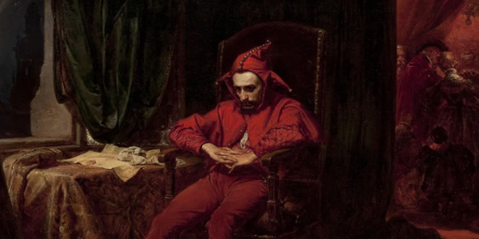
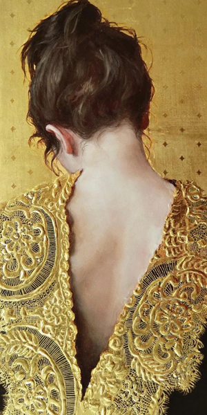
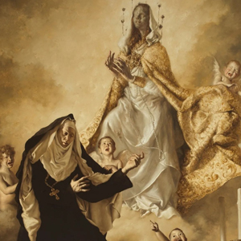
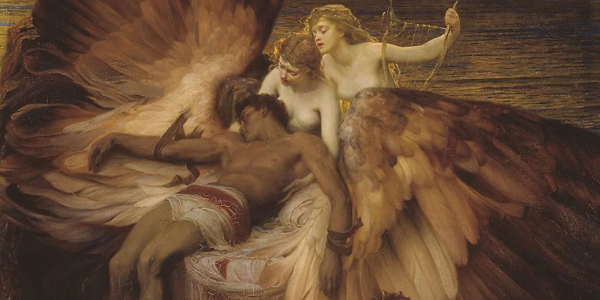
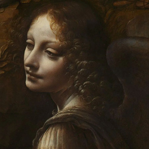

Andrés, un apasionado del arte, descubrió desde joven su verdadera vocación en la pintura gracias a su padre Miguel,
quien le proporcionaba materiales para dibujar. A pesar de especializarse en matemáticas, Andrés nunca dejó de pintar y,
a los 27 años, decidió ingresar a la escuela de artes para perfeccionar su talento.
En la actualidad, Andrés es un reconocido profesor de pintura en su comunidad, donde comparte su pasión
y conocimientos con entusiasmo. Sus clases están llenas de creatividad y técnica, inspirando a sus alumnos
a explorar su propia expresión artística y descubrir la belleza en cada trazo.
Pero Andrés no se limita solo a enseñar, sino que también comparte su arte con el mundo.
Sus obras, caracterizadas por colores vibrantes y emotividad, han capturado la atención de coleccionistas
y amantes del arte. Su estilo único, fusionando realidad e imaginación, transmite mensajes profundos y
evoca emociones en quienes las contempla.
Cada pincelada de Andrés es una forma de comunicarse con el mundo, plasmando en sus obras sus sueños,
experiencias y reflexiones. Cada cuadro es una pieza única que refleja su evolución como artista y como persona.
El legado de Andrés trasciende más allá de su comunidad, con sus obras exhibidas en galerías y museos,
llevando consigo un mensaje de esperanza, amor y libertad. Su arte ha logrado tocar los corazones de quienes
tienen el privilegio de contemplarlo, dejando una huella indeleble en el mundo del arte.
Andrés, el hombre que una vez soñó con pintar los objetos que su padre le traía, se ha convertido en un
maestro de la pintura, creador de belleza e inspirador incansable para aquellos que buscan encontrar su
propia voz a través del arte. Su historia nos recuerda que el amor, la pasión y la perseverancia pueden
ayudarnos a alcanzar nuestros sueños más preciados.

Grupo Cero
Copyrigth - All rights reserved 2022